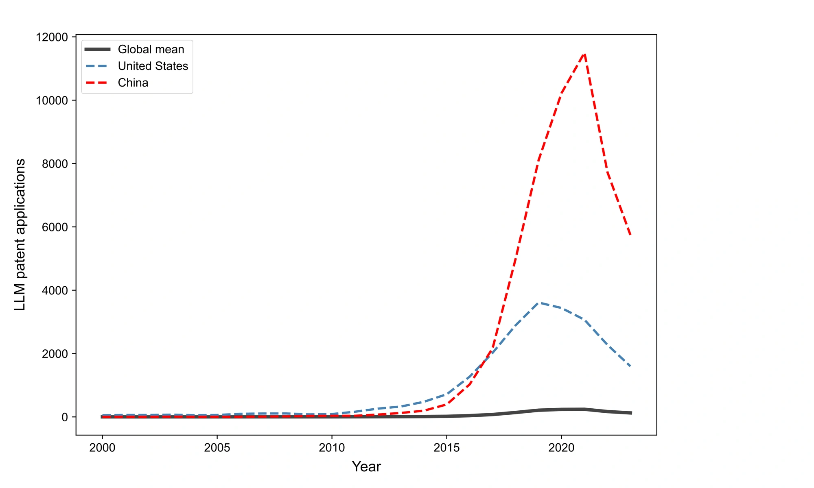
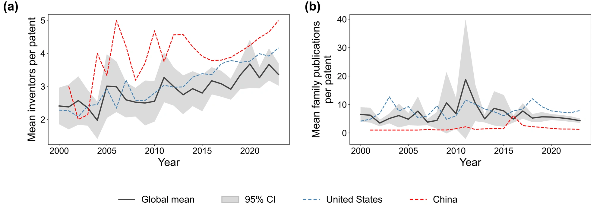
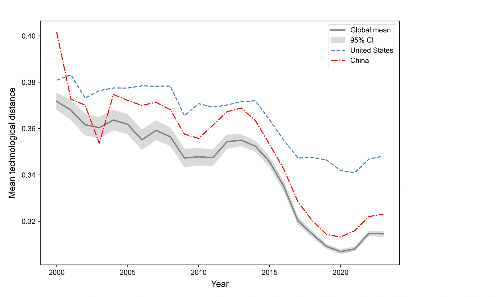

Research / Generative AI innovation
Technological exploration distance, revealed comparative advantage, and the US-China dual-core reconfiguration of generative AI innovation
Hugging Face dataset · Research code · Figure 9 at 600 dpi: PDF · PNG · JPG


Highlights
- Semantic convergence does not imply uniform national patent portfolios.
- US and Chinese portfolios differ in patent volume and inventor team size.
- The distance-specialization association depends on the observation unit.
- Patent concentration alone does not establish control over AI inputs.
Introduction
Patent counts measure the scale of invention, not technological position. Drawing on research on exploration and catch-up (March, 1991; Katila and Ahuja, 2002; Lee and Malerba, 2017), this study compares national patent portfolios, semantic distance, and technological specialization in generative artificial intelligence (GenAI).
Data and methods
The corpus contains 267,519 AI patent records from 2000–2024, including 97,911 GenAI records. PatentSBERTa measures proximity to technological cluster centroids (Bekamiri et al., 2024). Country-CPC-year revealed comparative advantage (RCA) measures relative specialization (Balassa, 1965; Chun et al., 2024). The regression outcome is RCA above one in the following year, including both new and continuing specialization.
Results
National patenting differs in scale and organization
China overtakes the United States in annual GenAI filings in 2017. Filing volume indicates scale, not technological quality; publication lags affect recent counts.

Notes. The series show the global country mean, the United States, and China. Shading marks 2017. Recent filing counts are affected by publication lags.
Chinese GenAI patents generally have larger inventor teams than US patents. Team size and family-publication counts vary over time and describe different organizational features of the portfolios.

Notes. (a) Mean number of inventors. (b) Mean patent-family publication count. The shared legend applies to both panels. Shading is the 95 percent confidence band for the global series.
Semantic distance declines without a uniform national trajectory
Mean patent-to-centroid distance declines, particularly after 2017, along different US and Chinese paths. This is semantic convergence, not evidence that the Transformer caused it.

Notes. Distance is measured from each patent embedding to its assigned cluster centroid. The observation-weighted global mean has a 95 percent confidence band; US and Chinese series are shown separately.
Distance and subsequent specialization depend on the unit of analysis
The distance-RCA association changes across observation units and specifications. The estimates do not establish a robust optimal exploration distance.
Table 2. Exploration distance and subsequent comparative advantage.
| Equal-cell FE | Patent–CPC FE | Pooled OLS | |
|---|---|---|---|
| Exploration distance | 0.0465** | -0.0322 | 0.1117*** |
| (0.0187) | (0.0206) | (0.0228) | |
| Squared exploration distance | -0.0406** | 0.0204 | -0.1068*** |
| (0.0187) | (0.0183) | (0.0243) | |
| RCA above one in year | 0.2793*** | 0.5325*** | 0.5253*** |
| (0.0139) | (0.0126) | (0.0260) | |
| Inventor centrality | -0.0055** | -0.0008 | 0.0009 |
| (0.0026) | (0.0010) | (0.0038) | |
| Number of inventors | 0.0148*** | 0.0026 | -0.0024 |
| (0.0045) | (0.0018) | (0.0078) | |
| Number of applicants | -0.0031 | 0.0011* | -0.0043 |
| (0.0033) | (0.0007) | (0.0026) | |
| Patent-family publications | 0.0130*** | 0.0012 | 0.0012 |
| (0.0044) | (0.0029) | (0.0048) | |
| Forward citations | 0.0069* | 0.0030 | 0.0231** |
| (0.0036) | (0.0019) | (0.0097) | |
| Backward citations | 0.0031 | 0.0021*** | -0.0017 |
| (0.0024) | (0.0007) | (0.0025) | |
| Number of claims | -0.0072 | -0.0136*** | -0.0094 |
| (0.0079) | (0.0049) | (0.0133) | |
| Constant | — | — | 0.2020*** |
| (0.0165) | |||
| Observations | 78,615 | 506,311 | 510,673 |
| Country clusters | 60 | 60 | 62 |
| Year, country and CPC effects | Yes | Yes | No |
| 0.0547 | 0.2651 | 0.2113 |
Notes. Outcome: RCA > 1 at t + 1. Parentheses contain country-clustered standard errors. FE models absorb additive year, country, and CPC effects. Cell means of distance and squared distance are standardized separately; the latter is not the square of the former. Samples and weights differ. *** p < .01; ** p < .05; * p < .10.
National application profiles vary across clusters
Regional application shares differ across clusters. The sample sizes below distinguish large portfolios from small groups.
Table 3. Regional application shares with RCA above one, 2000–2024.
| Cluster | US (%) | CN (%) | Korea and EU (%) | Applications |
|---|---|---|---|---|
| Cluster 1 | 11.2 | 83.8 | 5.0 | 29,063 |
| Cluster 2 | 17.2 | 81.2 | 1.6 | 64 |
| Cluster 3 | 22.0 | 8.2 | 69.7 | 3,543 |
| Cluster 4 | 34.2 | 58.9 | 6.8 | 39,298 |
| Cluster 5 | 33.3 | 50.0 | 16.7 | 6 |
Notes. Shares use the combined US, Chinese, Korean, and EU application count. LLM records are used where available, otherwise GenAI records. Cluster identifiers do not establish technological categories or ownership. Clusters 2 and 5 are small. Percentages may not sum to 100 because of rounding.
Discussion and implications
Semantic convergence can coexist with different national portfolios. Innovation policy should therefore assess portfolio composition and collaboration alongside patent counts, rather than infer a preferred search strategy from one indicator.
The Data-Human-Computing-Politics framework connects these differences to potential dependence on data, talent, and computing. Strategic leverage requires control of access and costly substitutes (Farrell and Newman, 2019). Those conditions need direct evidence: patent concentration alone does not establish them.
Data availability
Aggregate tables, model outputs, and figure-series data are available on Hugging Face. Analysis code is available on GitHub. Patent-provider inputs and personal records are not redistributed; access to underlying data remains subject to the providers' terms.
References
Balassa, B. (1965). Trade liberalisation and “revealed” comparative advantage. The Manchester School, 33, 99–123. https://doi.org/10.1111/j.1467-9957.1965.tb00050.x.
Bekamiri, H., Hain, D. S., & Jurowetzki, R. (2024). PatentSBERTa: a deep NLP based hybrid model for patent distance and classification using augmented SBERT. Technological Forecasting and Social Change, 206, 123536. https://doi.org/10.1016/j.techfore.2024.123536.
Chun, Y., Hur, J., & Hwang, J. (2024). AI technology specialization and national competitiveness. PLoS ONE 19(4), e0301091. https://doi.org/10.1371/journal.pone.0301091.
Farrell, H., & Newman, A. L. (2019). Weaponized interdependence: how global economic networks shape state coercion. International Security, 44, 42–79. https://doi.org/10.1162/isec_a_00351.
Katila, R., & Ahuja, G. (2002). Something old, something new: a longitudinal study of search behavior and new product introduction. Academy of Management Journal, 45, 1183–1194. https://doi.org/10.2307/3069433.
Lee, K., & Malerba, F. (2017). Catch-up cycles and changes in industrial leadership: windows of opportunity and responses of firms and countries in the evolution of sectoral systems. Research Policy, 46, 338–351. https://doi.org/10.1016/j.respol.2016.09.006.
March, J. G. (1991). Exploration and exploitation in organizational learning. Organization Science, 2, 71–87. https://doi.org/10.1287/orsc.2.1.71.